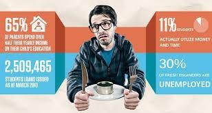
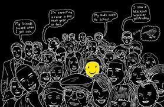
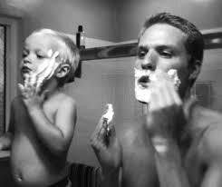
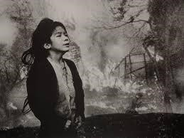

Engineers & Frustrations Go Hand In Hand- Mayank Mittal, Delhi Technical Institute
An “engineer” friend of mine once correctly said that if in case some engineer ended up being the Aamir Khan of Ghajini, then instead of “girlfriend was killed”, he would have “some engineer was killed” written on his body, instead of planning a vengeance on Ghajini, there would have been “Kill Professors” all over his body and finally in place of all those numbers, addresses, dates etc, he would have the list of assignments to be submitted, the list of projects to be completed and the most importantly “go…get yourself some sleep” engraved on his body.
On another such occasion, another friend once said “Yaar, it would be so wonderful if the 2012 prediction becomes a reailty….we can at least save ourselves from the dilemma of MS or MBA.”
One simple straightforward reason that I could find for such thoughts was frustration. Frustration in itself appears something which everyone has in their life, let it be engineers or non-engineering students, students or the teachers, parents, children or in general anybody. But frustration from the perspective of an engineer is something different. I have learnt about this only after I started my journey to become one of those lakhs of engineers our country produces every year.
There are so many causes of worry for an engineer. The list is simply endless.

Absence of girlfriend in life (a prime reason for most of my friends), lack of taste and even quality in the mess food, slow surfing and downloading speeds, inexplicable course load, classes, assignments, labs etc. Screwing up the minors or the majors, lack of sufficient holidays or professor taking a lecture on a holiday .No good movies to watch, the Xerox facility or some necessity going out of order.
I could even find some worrying too much about the problems of the society like rising onion prices, increasing corruption and black money, India losing the match etc.
From serious real life troubles to simple silly futile things, every now and then, every single moment, every small damn thing ends up as a cause of worry for an engineer. Any small aberration from the routine appears as something monstrous and troublesome for an engineer and the real big question is how does he get out of this frustration? How does he deal with it? What can be the solution to his problems? What could give him some peace of mind?
Frustration is a clear reflection of various hardships or the mental tensions an engineer is subjected to. There is no one who is like completely happy and untroubled. In fact I would say, he who has never gotten frustrated during his graduation period, hasn’t really experienced the true engineer life.
So what could be the possible solution to such small but still serious problem?
A change in the way you look at things. A change in the way you accept things. If you are being subjected to some unnecessary tensions or pressures, try to face and fight it. Never let it overpower you.
Unable to bear the loads? Maintain some regularity, consistency and discipline in the study and preparation matters….automatically you will feel the difference.
The moment you become a pessimist, then frustration follows and further defeat continues. Try to look into the good in whatever you do or whatever is being done to/with you. Take life positively. It will immediately remove frustration from your dictionary. Be the change that you wish to see….ending your troubles by mending your ways.
In Pursuit of Happiness- Deepankar Banerjee, Maharaja Surajmal Institute of Technology
Life is the very breath I breathe,
Life is the chance to make choices freely.
Liberty is the justice I deserve,
And with justice my rights are reserved.
Pursuit of happiness is my alibi,
The very statement I hope to live by.
Without life where’s the point of liberties?
Life should be filled with hope, confidence, and dignity.
Liberty to free myself from others’ jurisdictions,
Follow the rules, you won’t be stepped on by insurrections.

Pursuit of happiness is a path you can take or pass,
Hopefully you had good influences and accept your true task.
Life is not just a course of existence,
But how you impact others and keep your consistence.
Liberty is not immunity from confinement,
Like Brenton ‘only until you infringe on other’s’ said on his school assignment.
Therefore I will tell you this, I believe in individuality, optimism, Buddhism,
I’ll make my life, liberty, pursuit of happiness,
Into action not factitious.
It Was Yesterday- Shiv Dutt, Indraprastha Engineering College
When I was just a small kid
Do you remember when,
the time you kissed my bruises
or cleaned my soiled chins.

It seems like only yesterday,
you wiped away my tears
And late at night I called your name
To chase my fears away
Though time has changed your handsome grip,
Your hair is snowy white,
Your gait a little slower now
Thick glasses help your sight.
Oh! Do I thrust for years gone by,
To be that growing lad,
Reliving all of the memories of growing with my dad.
My Princess-Shiv Dutt, Indraprastha Engineering college
I remember the first day she called me 'pa', I was more than happy. I remember how she used to cling around my feet; I remember she used to cry, not letting me go, even for a second. Since the day she was born I knew she would leave me one day. Today is the day, when my 'princess' is on a verge of becoming a "Queen". I remember how she used to say "I won’t leave you ever, dad" but I knew the law of nature, she has to go. My sight might not be clear but my vision still is.
I remember all those things she used to do, she used to say, I remember her innocence, her fights. She is the happiness of my world and today I am handing over my life to her one true love. For twenty four years I nourished her with my blood and sweat and today at this moment I am left with nothing…nothing but a few memories… memories of my princess. I know a king knows well how to treat his Queen but still being a father I care for her well-being. I hope he takes care of my princess and endures her with his love. My sweet little princess.
Perfect-Avni Sehgal, Maharaja Surajmal Institute of Technology
The eyeliner makes the dark circles less pronounced. The lip gloss hides the trembling. The ponytail conceals missing patches of hair. The Abercrombie sweater covers bruises. I might look at bit thinner, but everyone will ask about my new diet. My hair might not shine the way it used to, but the pink ribbon will distract curious eyes. One hour of preparation and I look like myself. One hour of preparation and no one will know. One hour out of 24. Sometimes I wonder if it’s worth it – wasting a twenty-fourth of my day on a lie. But then I see my wispy hair and baggy eyes, and I have to do it.
Checking my makeup one last time, I push my sleeves up, though not past my elbows. I slip on a cute pair of flats – heels are too dangerous with shaky legs – and grab my Hollister bag. Padding downstairs, I inhale the scent of waffles and syrup.
“Morning, Mom,” I call.
“Morning, baby,” she chirps. “Did you sleep well?”
“Better than I have been.”
She sighs, and her eyes look a hundred years old for a minute. “Any improvement is good,” she says half-heartedly.
“Of course.”
“I made waffles.” Her offering.
“Thanks, Mom. Smells delicious.” My offering.
I sit at the table and she hands me a plate. The thought of all that food turns my stomach, but I force a smile and thank my mother again. She busies herself at the sink and fills the silence with chatter. When she turns around, she takes in the waffles still on my plate, only missing a few bites. I smile apologetically.
“I’m not very hungry this morning.”
“You’ll need your strength for this afternoon.” She bites her lip. She doesn’t like to bring it up over breakfast. I eat another bite.
“I packed your lunch.”
“I’m 18, Mom. I can pack my own lunch. You have more important things to do.”
She reaches for the paper sack. “But now I know you’ll have something to eat. And you need to eat, okay? You have to keep your strength up.”
Sighing, I take the bag. I know this peanut butter and jelly sandwich won’t be eaten, not any more than the one yesterday or the day before. And even if I do eat it, I’ll just throw it up later. Anything consumed after 11 ends up in a plastic basin at 4:07. It’s just the way it works.
“Hon, have you thought about what I said the other day?” she asks.
I shrug noncommittally.
“Sweetheart, you can’t hide this forever. Eventually you’re going to miss school and people will start asking questions.”
“Mom, I have two months left of high school. I can make it ’til then. I’m class president and probably valedictorian. I was voted ‘Most popular,’ ‘Most fun to be around,’ ‘Best smile,’ and ‘Most likely to succeed.’ I’m the girl who’s got it all together. People don’t want to know that the girl who’s got it all together, doesn’t have it all together. People don’t want to know that girl is dying!”
“Honey, don’t say that. You’re not dying.”
“Yes, I am. I have cancer. You heard Dr. Morrison. I have maybe a year left. But that means I can graduate and then never see those people again. I’ll die and they’ll feel sorry for me, but at least I won’t have to endure their pity.”
“But …,” she tries to interrupt.
“Mom, listen to me. I don’t want to be the girl everyone looks at and whispers, ‘Look at her. Poor thing, she has cancer.’ I can’t handle that. I want to be normal. Just for these last two months.”
“Okay,” she whispers. “Okay. Just remember, it’s okay if you don’t have it all together. Sometimes things just fall apart and there’s nothing we can do.”
“Thanks, Mom.” I grab my bag and lunch and kiss her on the cheek. “I love you.”
“I love you too,” my mom replies. This exchange, once taken for granted, is now a vital part of every morning, every afternoon, every night. Three little words, followed by four more, have come to mean more than an entire conversation. They bridge all gaps and disagreements, because we both know there is now a finite number left.
Keys in hand, I open the door and blink in the early morning sun. My silver car waits in the driveway and as I walk toward it, I check my reflection in the tinted window. Perfect.
Silent Protest-Deepankar Banerjee, Maharaja Surajmal Institute of Technology
Who is Moore to measure poets but a half?
What sorrowful flaw mixes poetry with math?
If it doesn’t mix in with the classical norm,
Nor embraces the free verse storm,
Does it mean it has no place?
Because it lacks a voice,
Does it indeed lack a face?
Is not the chef, with his frying
and scraping,
All the more godly for lack of verbal draping?
Does not the painter’s brush, and its colorful use
Speak only of beauty, and
poetic truth?
What of the writer and his all-encompassing prose;
Does not his pen speak of unearthly joys and timeless woes?
If all beauty be found in the land of rhyme and verse,
And all other marked paper, be but a dark hollow curse,
Then why do I find the glorious sensation,
Hidden deep inside the euphoric jubilation,
That lives inside the shining
white nation,
Of a day’s honest work, and a nights fantastic creation?
Symphony Of Life- Pooja Bhardwaj, IT(2nd Year), BVCOE
Life for her was nothing but mundane. She was just any other girl who went to a not so hyped college trying to lead a normal and uneventful life. Change was never her forte. From school to college was a change. One which was welcome but not appreciated. She had a group of people she called “friends” but deep down she knew that friendships don’t develop this quick. Life was going smooth and fine. No worries and no tension.
The nature’s rules however are different. The concept of entropy states that every system exists in a disorder. Her system decided to do the same. She decided to change. She started embracing the people around her. But that never meant that she compromised on her morals of being honest and sincere. However now she started to expect the same from people and that’s when her world came crashing down. All it took was one accusation and one friend. Things changed forever.
She realized she expected a lot. Although expectations towards friends was a given, not everyone can be a friend. But she was proved wrong even though she wasn’t. Deep down she knew that not everyone is going to be there to catch her when she falls. She realized people who listen to their hearts, talk to it and understand it are quite rare.
For all those who believe they have found their “one true love”, look at your parents, and think what they do for you, and you’ll realize what true love is. The girl had seen people live under false notions of "being cool". Betraying your parent’s trust, however trivial it might seem, and then giving hyper talks on trust, was something she despised, and could never relate to.

People started calling her an over obedient child, but she took that as a compliment, she thought everyone should. In the end, she had learnt to stay alone, survive alone. At first she thought there was something wrong with her behavior. Whatever she did, she could never fit in like her other friends did. But taking a look back she wasn’t a complete misfit. Was she?
Thinking of the misfits that ever existed, be it Einstein or Picasso, she realized the path of correct and righteousness was the one where you walk alone. After all who wants to be a part of the crowd? And who is to judge? People could care less about what she did in college or the people she hung out with. The only thing that matters is how you live your life. How true you remain to yourself.
"Anyone can survive. Despair is what one should avoid. Take life as it comes and it will surely give you moments to cherish that no forced or false friendships can."
She was a tough one. Nemesis Medusa was her name.
The Girl In The Hoodie- Abhinav Singh, MSIT
The rain pressed heavily, dropping hard on my head and nose, occasionally making my eyes blurry, but I didn’t blink much. The cold wind rummaged through my jacket as I made my way to the Metro Station. It was evening though one couldn’t really tell since the sun rarely managed to sneak in from behind those majestic hills. The never ending dark clouds seemed to hover over the earth, as far as my eyes could go. It suited my style, my personality. The spotlight wasn’t screaming its lungs out at me anymore.
I walked at a normal pace as the others dashed past me, I looked at my watch. The train had almost arrived, and I ran too, leaving the others behind, the girl in the hoodie had almost arrived.
I seemed to love pain. It was something I deliberately let hang around even after the party was over. I know I couldn’t handle it too much but I couldn’t let go of the things it made me feel, of the things it made me think about. I had no severe life threatening problems, I was just caught off guard every single time they ricocheted past me. And I always wondered why. Things were fine, mostly smooth and yet I felt that thing missing, like something had stopped, something which was meant to, supposed to happen throughout my entire my life and in a sudden flash, it was all gone. I don’t know when the “flash” flashed, I don’t remember.
I checked past security, ignoring the judgmental, speculative eyes of the guard as he ran his hands all over my excessively damped clothes. I raced through the stairs, the automatic ones were too slow. The yellow lights flashed at a distance, as the train approached, my heart beating faster with every blink, the size of the train was increasing. I said I didn’t blink much, but it was always the train which made me. And it was all accidental.
I would take the train back home from my office, every evening around this time, along with people I didn’t know, hadn’t seen, hadn’t met, and yet there was this familiarity which existed throughout the 4 coaches. They all had problems, and I just had those 40 minutes to take a breath and realize that fact.
A saw her a week back, for the first time in my life, but something told me that my eyes had had this experience before. Maybe it’s another form, my heart would reply. Maybe you are just too depressed for no reason at all, my head would conclude. She was fairly tall. That’s all I could say about her the first day I saw her. She would always wear that hoodie, covering most of her face, though her hair would manage to escape, sliding through the back of her ears. She had long shiny hair, and for 2 days straight, I couldn’t manage a single proper glimpse of her face.
Travelling in the train isn’t always a task of linear transmission. You never just stand, sit, wait and leave, you see things. Peculiar little things floating about, giving you a glimpse of what short parts of their lives people reveal. All I wanted was to see her face, and so I stood, sat, waited, and painfully left, never managing a full view of her face. But something about her struck. She would always wear the same hoodie, and I was beginning to be obsessed about knowing what was underneath it.
I would stand in the centre, she would always pick the corner. She would never sit, even though people offered her seats, she didn’t rest even when they were empty. I caught her eyes ones, they were black, a shade of black I hadn’t seen. Over reacting my brain would conclude, again, and yet that excitement of a fresh revelation remained.
It would be weird, I realized, to stare at someone like that, and even though I couldn’t help it, I knew she was aware of my unfazed gaze. She chose to ignore it. She too, would have her eyes transfixed, I don’t know at what, but I reckoned she knew what I was feeling, that hollow feeling of not being inspired. She is just minding her own business, like everyone else, my brain would conclude, much to my heart’s agony.
But you should do something about it, my brain suggested. Ah, so you are intrigued too, my heart would mock. So I took my earphones out, plugged them in, and watched, yeah, that would make me seem less creepy I figured. I was never a “Metal” Person, I preferred Grunge. I rocked my head a little, enjoying this combination of music and her sight. 6 days passed like this.
I wanted to talk to her, to see her, to know her and more than anything, to figure out this strange sense of attraction I had towards someone I couldn’t even properly see. That damn hoodie. I shifted my weight, still looking for a better view. She would get off 2 stops after mine. I had to track back home 3 because of her. The train would get almost vacant by then, only a few people hanging around. Some elderly people, a few school kid and her, in that damn hoodie.
I sometimes feared that I had forgotten how to feel the things I used to, those songs didn’t make sense anymore, and those places weren’t serene. All I had were memories, and memories alone. This though, was different. It wasn’t complicated. It was as simple as it could get. One stranger, wanting to know another stranger, in a train full of strangers.
I stood, as always, as the crowd began to disappear. My heart sank as the doors opened and shut, I had to talk to her. Just 2 more stops left, my mind was racing with all those things I could say, all the things I could see. That was when she turned to her side, facing me, as I quickly averted my gaze, blood rushing to the back of my head. She unfolded her arms, and slowly walked towards me. I stood where I was, wanting to say something I know I couldn’t. It was her eyes, the first time I was seeing them. Some sense of pain lingered in those black shaded gates, there was also some twinkle. She was getting nearer, quickly now. I straightened myself, but as soon as I had, I noticed how her eyes weren’t matching mine; they were focused on something behind me. I lowered the sound of my music, but not completely, I knew I needed it. She paced right past me, evidently unaware of my presence and before I could turn or move, I heard the loudest cry I had in a long time. That was when I turned, and that was when I saw, the girl in the White hoodie, as she took a long sharp knife out of her sleeve and pierced the man’s neck, the man who was standing behind me. The man who was always there, sometimes with his friends, sometimes alone. How did she manage to get that knife in the metro was something I didn’t ponder over for a long time. Blood splattered all across, his expression slowly turned from surprise to fear to agony. I remember that, I remember that well. He went down on his knees, the blood falling faster than he was, there was a lot of it. She kept stabbing him in his chest as the elderly couple ran for it, to the far end of the coach. The two school kids watched with their mouths open, backing away slowly, their eyes opening for the first time in their lives. It all happened in a flash. That flash I forgot, that flash I missed, as I thought of a million things, watching her stab him to death. Run my brain said, stay said my heart. Watch said my eyes, redemption screamed my soul. The blood wasn’t red; it was purple, dark purple, as it raced with the train on the floor, rushing towards my feet. I knew I wasn’t breathing, the music was still on, I could hear both of them scream. With every stab, her big tears fell inside his ripped chest. With every stab, a pool of blood pounced all over her White hoodie. The train stopped, the door opened. She was still stabbing him; it was all slow motion, as the man waiting to enter the coach ran back to where he came from. The wind rushed in, as her stabs increased, and all this while I had not noticed her face. It was burned from the bottom of her neck to the side of her face. Her eyes were red now, not black. My music was dying now, “Alice In Chains” was now becoming “Slayer”. She is a psycho, she will kill you next, said my brain. No, this is hell, and the man’s blood has caused it said my heart. The doors remained opened, as she got up to her feet, the man dying motionless at her feet, his eyes popping out, there was blood all around, red splashed all over her hoodie. She dropped the knife as she got up slowly, still taking in short breaths, her eyes were now on me. I didn’t know what to feel. I was numb, I didn’t know what this meant, and yet from the inside, I think I knew. Tears raced down her magnificent face, sneaking from behind those drops of purple blood on her face. I didn’t know what she was thinking, though her eyes reflected desperation, this didn’t make anything better, and yet this had to be done. I was not scared, for the first time in my life, I was not scared of something as real as her, looking right into my eyes. She was death, The Girl In The Red Hoodie. I wanted to hug her, to hold her tight, my feelings for her had changed, she was more familiar than before, she was now my responsibility. As I watched the uniforms running their way into the coach, I slowly walked towards her, my heart, head and soul, were all bleeding red.
It’s been two months now, since they dragged her to the station. Her sister was raped and killed by the same man she stabbed to death, that’s what the newspapers said. Her face was burned with acid by the same man who lay right there as I fought those uniforms, forcing them away. I watched the sun set, the hills weren’t majestic anymore, but the sun finally came into being. It was orange, as the light slowly faded away, the orange that reminded me of meaning, of resurrection. I was at the same metro station, at the same time, waiting for the same train, but somehow I would never board it ever again, my life had a different direction now.